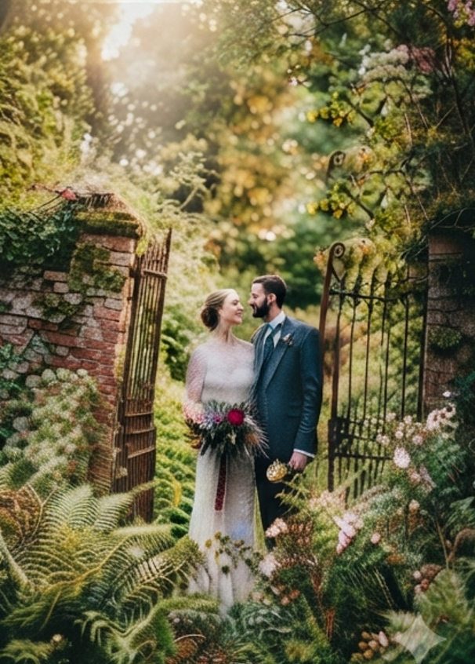
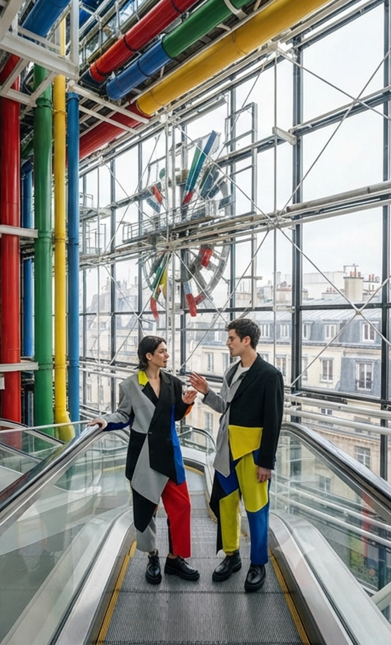

Prestations
Deux univers, une même approche
Que ce soit un mariage ou une séance privée, je travaille de la même façon : peu de contraintes de pose, beaucoup d'observation.

Le week-end
Mariages
Couverture complète ou partielle de la journée, du préparatif à la soirée. Reportage naturel, sans photos posées interminables.
- Formule journée complète ou demi-journée
- Galerie privée livrée sous 3 à 4 semaines
- Album accessible via l'espace clients, avec code personnel

Sur rendez-vous
Shootings privés
Séances en petit comité, en studio ou en extérieur, pour un projet personnel. La discrétion sur les livrables est la règle : les photos ne sont jamais partagées sans votre accord.
- Séance individuelle ou à plusieurs
- Sélection et retouche des meilleurs clichés
- Album privé, accessible uniquement avec votre code personnel